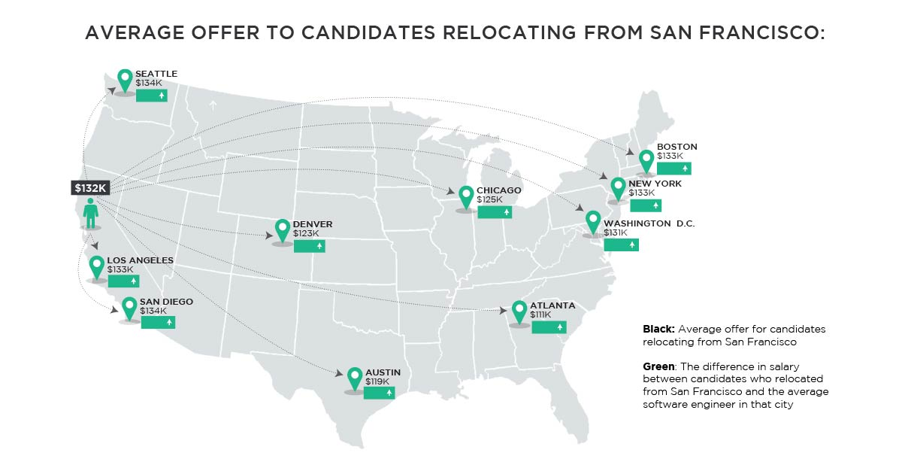

Hired, the company on a mission to get everyone a job they love, has tapped into its data to reveal insights on software engineers’ salaries and the hiring market more generally. Because Hired facilitates the job searching process from the initial interview request all the way to the final job offer, we have unprecedented visibility into salaries across a variety of positions and companies. Most of the tools available to companies and job seekers are flawed and inaccurate. Salary calculators don’t account for company size, years of candidate experience or location, while many job sites are based on anonymous, self-reported data which can vary widely in accuracy. Hired’s data, on the other hand, is based on actual job offers made to real people.
Our inaugural State of Salaries report is part of a larger effort to bring more transparency to the hiring process. We want to empower candidates to understand their market value based on their skills and experience so that they can approach the job searching process armed with information. We also want to help companies recruit and hire with insight. We believe this transparency benefits everyone, so that individuals can find jobs they love and companies can attract the individuals who will drive their businesses forward.
WHERE DOES YOUR SOFTWARE ENGINEERING PAYCHECK GO THE FURTHEST?
San Francisco is infamous for high salaries and even higher rents. While San Francisco salaries are huge - $132K on average for software engineers - adjusting for cost of living paints a different picture. We used a standardized cost of living calculator to show how average salaries in each city would compare to San Francisco.
For example, an engineer in Austin making $110,000 would need to make $195,000 in San Francisco to maintain the same quality of life.
While it’s easy for job seekers to get stars in their eyes over the salaries in San Francisco, when you adjust for cost of living, an engineer’s salary goes further in every city in our analysis with the exception of New York.

STARTING A CAREER? DO IT IN SAN FRANCISCO.
Forgetting cost-of-living adjustments for a moment, our data indicates that there are advantages to starting your career in San Francisco. Candidates leaving the Bay Area command higher offers than candidates from any other city in our analysis.
Bottom line: No matter where you want to work, engineers that start their careers in San Francisco have a higher earning potential once they move to other job markets.

ABOUT HIRED
Hired is on a mission to get everyone a job they love. Starting with in-demand tech and sales roles, we’ve built a marketplace that brings together highly qualified individuals with the companies who want to hire them. Users on the Hired platform receive objective guidance throughout the interview process from a dedicated Talent Advocate, as well as the ability to compare new opportunities side by side so they can make their next career move with confidence. Employers get access to a hand-picked pool of candidates who are interested in new roles, as well as unmatched transparency into competing offers so they can recruit and hire with insight. The end result is an efficient, effective and enjoyable experience that’s far faster than traditional methods. Hired is headquartered in San Francisco, with offices in nearly a dozen cities in North America and Europe and plans to expand to a variety of industries and job categories.